Amanohashidate (天橋立) is one of the top three scenic locations in Japan, located in Miyazu Bay in northern Kyoto Prefecture. Amanohashidate, which means “Heavenly Bridge,” is a long sandbar lined with pine trees. If it is viewed upside down, Amanohashidate will appear like a bridge between the earth and the sky. You will find many people trying to see the bridge between their legs with their heads down. This is called “Mata nozoki”. You need good flexibility!

There are two view points situated at both ends of Amanohashidate. One is Kasamatsu Park (傘松公園) on the north side, and the other one is called Amanohashidate Veiw Land on the south side. In both cases, you use a cable car to get to the top of the mountain, where the park is found.
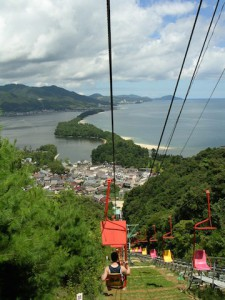
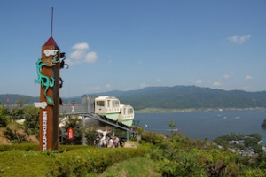
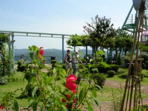
There is a small amusement facility for children, and a restaurant too. Look, this udon dish has big wakame see weeds!
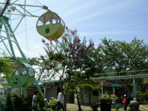
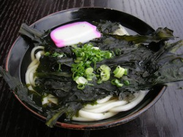
After eating lunch and trying “mata nozoki”, we went down the mountain and visited Amanohashidate itself.
You can take a walk or ride a bicycle to visit this natural sand bridge. My suggestion is you walk one way and rent a bicycle the way back. It is really pleasant to walk in the pine tree forest. It takes about 1 hour on foot to reach the other side of the sand bar.
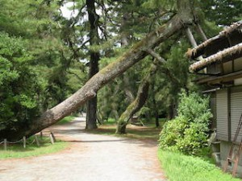
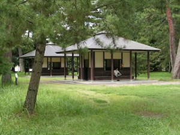
Amanohashidate is also a famous place where a great swordsman, Iwami Jutaro, took a revenge on enemies of his father in 1632.
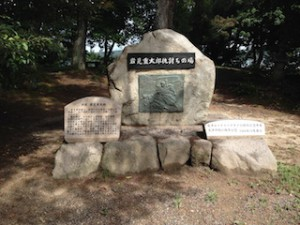
There is a small shrine called Amanohashidate-jinja (天橋立神社) on the pine-tree street. This is one the three major shrines found in this area, and here, Hachidai-ryûô is enshrined. Ryûô or Dragon King, who is living in the water, is a god accompanying Buddha. Amanohashidate also has some dragon legends.
Long long time ago, it was in the age of the gods in Japan… On the passage for gods dropped the sea. It was Dragon God who made up the “bridge” by piling up soil in one night. And this pine tree passage itself looks like a dragon.
This is how Amanohashidate was born.
Also, by this shrine, you’ll find a well which contains the water called “Isosimizu”. It has been selected among 100 Exquisite and Well-Conserved Waters. This water is not drinkable, but it is fresh water though it is located by the sea. We use this water to purify ourselves before visiting Amanohashidate-jinja.
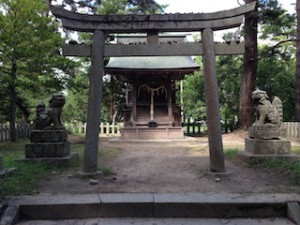
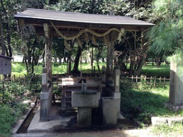
There is a nice beach too. Many visitors come here for many kinds of activities. Enjoy swimming and sunbathing in the summer!
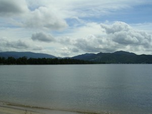
About in an hour you’ll reach the other side of the sand bar. From there, continue a bit father, and you’ll find the other two shrines.
Kono-jinja (籠神社) Kono-jinja Official Site
This shrine has a long long history. Called also “Moto Ise (元伊勢)“, it is considered to be one of the most ancient shrines in Japan. Moto Ise means a shrine which enshrined the Gods temporarily before they moved to Ise Jingu in Mie prefecture.
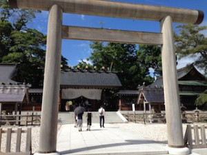
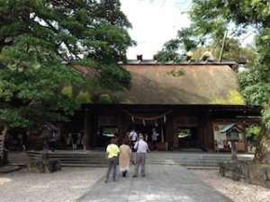
Ise-jingu or Ise Grand Shrine is a Shinto complex composed of 125 Shinto shrines centered on two main shrines, Naikû and Gekû. Naikû is dedicated to Amaterasu-omikami, and Gekû to Toyo-uke no Omikami.
Amaterasu Omikami was born as the most sacred goddess. She is the goddess of life and the ancestor of our Imperial Family, and of Japanese people too. And Toyo-uke no Omikami is the guardian god who provides us with food, clothing and shelter. Also, Amaterasu Omikami welcomed Toyo-uke no Omikami to Ise to have her meal prepared. So Toyo-uke no Omikami is the god who gives energy and power to Amaterasu Omikami.
These two goddesses were not enshrined at Ise-jingu from the beginning.
Amaterasu Omikami had been enshrined within the Imperial Palace, but Emperor Sujin ordered Imperial Princess Toyosukiirihime no Mikoto to enshrine Amaterasu Omikami in the Kasanui Village of Wa (ancient Japan), to respect her and to suppress the plague that was killing a number of people at that time. It was in 92 B.C. After that Toyosukiirihime no Mikoto and Yamatohime no Mikoto were traveling around to find the best place to enshrine the Sun Goddess. And finally Yamatohime no Mikoto established Kôtaijingu (Naikû) in present-day Mie prefecture, and this is the origin of Ise-jingu.
“Moto Ise” indicates the shines where the two princesses enshrined temporarily Amaterasu Omikami while they were traveling.
Furthermore, in the age of Emperor Yûryaku (reigns 456–479), Toyo-uke no Omikami was sent to Ise as the god preparing meals for Amaterasu Omikami. And the place where Toyo-uke no Omikami was enshrined is also called Moto Ise. Toyo-uke no Omikami descended on earth with Amenohohakari no Mikoto, who helped find the best place for Toyo-uke no Omikami to settle. The secondary shrine of Kono-jinja, called Manai-jinja Shine, was chosen for Toyo-uke no Omikami. Since then, The Amabe family, who succeed the bloodline of Amenohohakari no Mikoto, have been in charge of the religious services of Kono-jinja.
Kono-jinja, thus, has been revered as a special Moto Ise.
Manai-jinja Shrine (真名井神社)
This shrine is located in the site of approximately 400 meters northeast of the main shrine, Kono-jinja. Here, Amenohohakari no Mikoto came down to earth and enshrined Toyo-uke no Omikami. It is very sacred. The place was chosen because there was pure water welling up here. This water is called “Manai no Mizu.”
No photo within the precincts. Please don’t enter the forest, and please don’t visit there with beach sandals and short pants on.
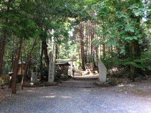
On the way back, you have three choices, on foot, by bicycle, or by boat. It depends on how much energy you still have after all these visits. We decided to walk again!
There is another place to visit. It is at the starting point of the pine tree street.
Chion-ji Temple (智恩寺） Chion-ji Official Site
This temple belongs to Myôshin school of Rinzai Sect. The principal image of Buddha is Monju Bosatsu (文殊菩薩), a god of wisdom. It is said to have been founded in 808 as a chokugan-ji of Emperor Heizei, a temple built at the order of the emperor.
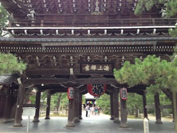
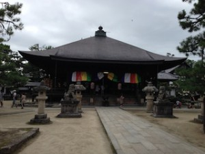
Chikara ishi (力石）
These stones were used for a festival or gathering at this temple. Men were carrying these stones to show their physical strength. The heaviest one is 130 kg, the medium 100 kg, and the smallest 70 kg. They were competing with each other.
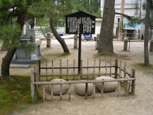
To have a rest, I recommend a nice cafe standing by Chion-ji. Actually, in front of the gate of Chion-ji, there are many restaurants and souvenir shops. Many restaurants serve good seafood dishes. But if you rather wish to have some coffee and cake, visit Cafe du Pin. Their cakes are excellent. I love their rolled cake made from rice flour. It stands by the sea, too.
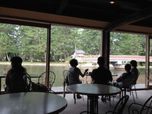
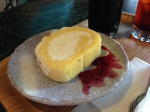
Amanohashidate is located in the north of Kyoto City. You may not have enough time to go so far, but if you have an occasion someday. From my hometown, Toyo-oka city, you can take a direct train to Amanohashidate (Kitakinki Tango Railroad), which runs though several small towns in the Tango Peninsula. It is very beautiful. I’d also like to visit these small towns someday.
・Amanohashidate Tourism Office (Japanese)
・Kitakinki Tango Railroad (Check their short videos/Japanese)
・Tango Peninsula (the region between Toyooka and Amanohashidate/Japanese)